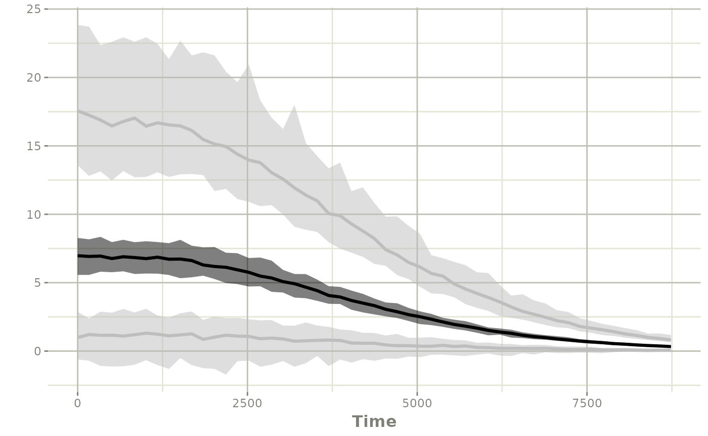
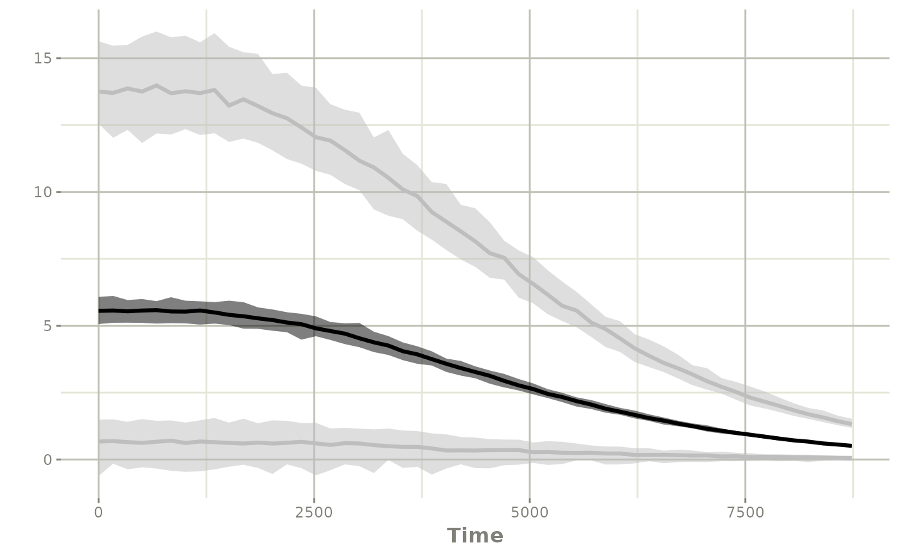

Simulate New dosing with covariates
Source:vignettes/simulate-new-dosing-with-covs.Rmd
simulate-new-dosing-with-covs.RmdSimulation with covariates or input parameters
Sometimes your NONMEM model can have covariates that you may wish to simulate from; this simulation exercise shows a few methods to simulate with the covariates from NONMEM.
Step 0: input the model
In this case, we will use the Friberg myelosuppresion model originally contributed as an example by Yuan Xiong.
With the simulated data in nlmixr2, babelmixr2, and some manual edits to simplify the model we run NONMEM 7.4.3.
Note in this case there are some PK parameters that are in the model that require some special handling to simulate with uncertainty or even with different dosing scenarios.
For any simulation scenario, we need to import the NONMEM model:
# Since this is an included example, we import the model from the
# `nonmem2rx` package. This is done by the `system.file()` command:
wbcModel <- system.file("wbc/wbc.lst", package="nonmem2rx")
wbc <- nonmem2rx(wbcModel)
#> ℹ getting information from '/home/runner/work/_temp/Library/nonmem2rx/wbc/wbc.lst'
#> ℹ reading in xml file
#> ℹ done
#> ℹ reading in phi file
#> ℹ done
#> ℹ reading in lst file
#> ℹ abbreviated list parsing
#> ℹ done
#> ℹ done
#> ℹ splitting control stream by records
#> ℹ done
#> ℹ Processing record $INPUT
#> ℹ Processing record $MODEL
#> ℹ Processing record $THETA
#> ℹ Processing record $OMEGA
#> ℹ Processing record $SIGMA
#> ℹ Processing record $PROBLEM
#> ℹ Processing record $DATA
#> ℹ Processing record $SUBROUTINES
#> ℹ Processing record $PK
#> ℹ Processing record $DES
#> ℹ Processing record $ERROR
#> ℹ Processing record $ESTIMATION
#> ℹ Ignore record $ESTIMATION
#> ℹ Processing record $COVARIANCE
#> ℹ Ignore record $COVARIANCE
#> ℹ Processing record $TABLE
#> ℹ change initial estimate of `theta1` to `1.83169895537931`
#> ℹ change initial estimate of `theta2` to `8.37329670479077`
#> ℹ change initial estimate of `theta3` to `6.37739634773425`
#> ℹ change initial estimate of `theta4` to `-11.558011558`
#> ℹ change initial estimate of `theta5` to `0.464650000001741`
#> ℹ change initial estimate of `eta1` to `0.0979049999946534`
#> ℹ change initial estimate of `eta2` to `2.99999999999372e-06`
#> ℹ change initial estimate of `eta3` to `1.99999999999944e-05`
#> ℹ read in nonmem input data (for model validation): /home/runner/work/_temp/Library/nonmem2rx/wbc/wbc.csv
#> ℹ ignoring lines that begin with a letter (IGNORE=@)'
#> ℹ applying names specified by $INPUT
#> ℹ done
#> using C compiler: ‘gcc (Ubuntu 11.4.0-1ubuntu1~22.04) 11.4.0’
#> ℹ read in nonmem IPRED data (for model validation): /home/runner/work/_temp/Library/nonmem2rx/wbc/wbc.pred
#> ℹ done
#> ℹ read in nonmem ETA data (for model validation): /home/runner/work/_temp/Library/nonmem2rx/wbc/wbc.eta
#> ℹ done
#> ℹ changing most variables to lower case
#> ℹ done
#> ℹ replace theta names
#> ℹ done
#> ℹ replace eta names
#> ℹ done
#> ℹ renaming compartments
#> ℹ done
#> using C compiler: ‘gcc (Ubuntu 11.4.0-1ubuntu1~22.04) 11.4.0’
#> ℹ solving ipred problem
#> ℹ done
#> ℹ solving pred problem
#> ℹ done
print(wbc)
#> ── rxode2-based free-form 7-cmt ODE model ──────────────────────────────────────
#> ── Initalization: ──
#> Fixed Effects ($theta):
#> log_CIRC0 log_MTT log_SLOPU log_GAMMA prop.err
#> 1.831699 8.373297 6.377396 -11.558012 0.464650
#>
#> Omega ($omega):
#> eta.CIRC0 eta.MTT eta.SLOPU
#> eta.CIRC0 0.097905 0e+00 0e+00
#> eta.MTT 0.000000 3e-06 0e+00
#> eta.SLOPU 0.000000 0e+00 2e-05
#>
#> States ($state or $stateDf):
#> Compartment Number Compartment Name
#> 1 1 CENTR
#> 2 2 PERIPH
#> 3 3 PROL
#> 4 4 TR1
#> 5 5 TR2
#> 6 6 TR3
#> 7 7 c.CIRC
#> ── Model (Normalized Syntax): ──
#> function() {
#> description <- "wbc"
#> dfObs <- 176
#> dfSub <- 45
#> sigma <- lotri({
#> eps1 ~ 1
#> })
#> thetaMat <- lotri({
#> log_CIRC0 + log_MTT + log_SLOPU + log_GAMMA + prop.err +
#> eps1 + eta.CIRC0 + omega.2.1 + eta.MTT + omega.3.1 +
#> omega.3.2 + eta.SLOPU ~ c(0.00339803, -0.00171728,
#> 0.00224653, -0.00142939, 0.00545118, 0.0311551, 0.0107932,
#> -0.0333153, -0.18915, 3.18077, 8.44599e-05, -0.000185993,
#> -0.00110008, 0.0241601, 0.000189655, 0, 0, 0, 0,
#> 0, 0, -0.00103234, 0.00125366, 0.00108067, 0.000599458,
#> 3.39316e-05, 0, 0.000977024, 0, 0, 0, 0, 0, 0, 0,
#> 0, 5.9718e-08, -5.65051e-08, 6.21392e-09, 8.42426e-07,
#> 6.68526e-09, 0, -5.00488e-08, 0, 7.54658e-12, 0,
#> 0, 0, 0, 0, 0, 0, 0, 0, 0, 0, 0, 0, 0, 0, 0, 0, 0,
#> 0, 0, 0, 3.70943e-07, -1.8945e-07, 1.25175e-06, -1.7346e-06,
#> 1.59707e-09, 0, -3.13414e-07, 0, 5.308e-11, 0, 0,
#> 4.20267e-10)
#> })
#> validation <- c("IPRED relative difference compared to Nonmem IPRED: 0%; 95% percentile: (0%,0%); rtol=7.82e-11",
#> "IPRED absolute difference compared to Nonmem IPRED: 95% percentile: (4.96e-11, 1.28e-06); atol=5.24e-10",
#> "PRED relative difference compared to Nonmem PRED: 0%; 95% percentile: (0%,0%); rtol=6.72e-11",
#> "PRED absolute difference compared to Nonmem PRED: 95% percentile: (1.4e-11,4.89e-05) atol=6.72e-11")
#> ini({
#> log_CIRC0 <- 1.83169895537931
#> label("1 - log_CIRC0")
#> log_MTT <- 8.37329670479077
#> label("2 - log_MTT")
#> log_SLOPU <- 6.37739634773425
#> label("3 - log_SLOPU")
#> log_GAMMA <- -11.558011558
#> label("4 - log_GAMMA")
#> prop.err <- c(0, 0.464650000001741)
#> label("5 - prop.err")
#> eta.CIRC0 ~ 0.0979049999946534
#> eta.MTT ~ 2.99999999999372e-06
#> eta.SLOPU ~ 1.99999999999944e-05
#> })
#> model({
#> cmt(CENTR)
#> cmt(PERIPH)
#> cmt(PROL)
#> cmt(TR1)
#> cmt(TR2)
#> cmt(TR3)
#> cmt(c.CIRC)
#> mu_1 <- log_CIRC0
#> mu_2 <- log_MTT
#> mu_3 <- log_SLOPU
#> circ0 <- exp(mu_1 + eta.CIRC0)
#> mtt <- exp(mu_2 + eta.MTT)
#> slopu <- exp(mu_3 + eta.SLOPU)
#> gamma <- exp(log_GAMMA)
#> rxini.rxddta3. <- circ0
#> PROL(0) <- rxini.rxddta3.
#> rxini.rxddta4. <- circ0
#> TR1(0) <- rxini.rxddta4.
#> rxini.rxddta5. <- circ0
#> TR2(0) <- rxini.rxddta5.
#> rxini.rxddta6. <- circ0
#> TR3(0) <- rxini.rxddta6.
#> rxini.rxddta7. <- circ0
#> c.CIRC(0) <- rxini.rxddta7.
#> cl <- CLI
#> v1 <- V1I
#> v2 <- V2I
#> RXR1 <- 204
#> conc <- CENTR/v1
#> NN <- 3
#> ktr <- (NN + 1)/mtt
#> edrug <- 1 - slopu * conc
#> fdbk <- (circ0/c.CIRC)^gamma
#> circ <- c.CIRC
#> d/dt(CENTR) <- PERIPH * RXR1/v2 - CENTR * (cl/v1 + RXR1/v1)
#> d/dt(PERIPH) <- CENTR * RXR1/v1 - PERIPH * RXR1/v2
#> d/dt(PROL) <- ktr * PROL * edrug * fdbk - ktr * PROL
#> d/dt(TR1) <- ktr * PROL - ktr * TR1
#> d/dt(TR2) <- ktr * TR1 - ktr * TR2
#> d/dt(TR3) <- ktr * TR2 - ktr * TR3
#> d/dt(c.CIRC) <- ktr * TR3 - ktr * c.CIRC
#> f <- CENTR
#> ipred <- c.CIRC
#> w <- sqrt((ipred * prop.err)^2)
#> if (w == 0)
#> w <- 1
#> y <- ipred + w * eps1
#> })
#> }
#> ── nonmem2rx translation notes ($notes): ──
#> • some NONMEM input has tied times; they are offset by a small offset
#> • $MODEL NCOMPARTMENTS/NEQUILIBRIUM/NPARAMETERS statement(s) ignored
#> ── nonmem2rx extra properties: ──
#>
#> Sigma ($sigma):
#> eps1
#> eps1 1
#>
#> other properties include: $nonmemData, $etaData
#> captured NONMEM table outputs: $predData, $ipredData
#> NONMEM/rxode2 comparison data: $iwresCompare, $predCompare, $ipredCompare
#> NONMEM/rxode2 composite comparison: $predAtol, $predRtol, $ipredAtol, $ipredRtol, $iwresAtol, $iwresRtol
# note the NONMEM vs rxode2 models validate well. You can see this in
# the validation code:
message(paste(wbc$meta$validation, collapse="\n"))
#> IPRED relative difference compared to Nonmem IPRED: 0%; 95% percentile: (0%,0%); rtol=7.82e-11
#> IPRED absolute difference compared to Nonmem IPRED: 95% percentile: (4.96e-11, 1.28e-06); atol=5.24e-10
#> PRED relative difference compared to Nonmem PRED: 0%; 95% percentile: (0%,0%); rtol=6.72e-11
#> PRED absolute difference compared to Nonmem PRED: 95% percentile: (1.4e-11,4.89e-05) atol=6.72e-11Option #1: simulate with the same conditions as the input model
The easiest way to simulate with uncertainty is to use the original
NONMEM input dataset. If we want to simulate covariates from here, we
simply add resample=TRUE:
sim <- rxSolve(wbc, resample=TRUE, nStud=500)
#> ℹ using nocb interpolation like NONMEM, specify directly to change
#> ℹ using addlKeepsCov=TRUE like NONMEM, specify directly to change
#> ℹ using addlDropSs=TRUE like NONMEM, specify directly to change
#> ℹ using ssAtDoseTime=TRUE like NONMEM, specify directly to change
#> ℹ using safeZero=FALSE since NONMEM does not use protection by default
#> ℹ using ss2cancelAllPending=FALSE since NONMEM does not cancel pending doses with SS=2
#> ℹ using dfSub=45 from NONMEM
#> ℹ using dfObs=176 from NONMEM
#> ℹ using thetaMat from NONMEM
#> ℹ using sigma from NONMEM
#> ℹ using NONMEM's data for solving
#> ℹ using NONMEM specified atol=1e-12
#> ℹ using NONMEM specified rtol=1e-06
#> ℹ using NONMEM specified ssAtol=1e-12
#> ℹ thetaMat has too many items, ignored: 'omega.2.1', 'omega.3.1', 'omega.3.2'
#> [====|====|====|====|====|====|====|====|====|====] 0:00:05
#> Warning: corrected 'thetaMat' to be a symmetric, positive definite matrixIn this case every individual re-samples from the original dataset’s
covariates. In this particular case, the dosing changes per individual
and it may not be what you wish to share with the team but may be a way
to see how the model is performing relative to the data. Binning may be
necessary, as with a typical VPC
Option 2: simulate with a different condition (with resampled PK parameters/covariates)
In this case, you may wish to simulate a study that has similar covariates as the NONMEM model in general (and also with resampling)
First lets simulate 410 every 20 days. We can easily add
this by creating a event table with the same input PK parameters as the
NONMEM dataset.
# first create the base event table with the nubmer of individuals
# matching the NONMEM dataset:
ev <- et(amt=410, ii=20*24, until=365*24) %>% # Add dosing 20 days apart for a year
et(seq(0, 365*24, by=7*24)) %>% # Assume weekly observations
et(id=seq_along(unique(wbc$nonmemData$ID))) %>% # Match the number of subjects modeled
as.data.frame # convert to data.frame
# Now create the PK covariates
library(dplyr)
#>
#> Attaching package: 'dplyr'
#> The following objects are masked from 'package:data.table':
#>
#> between, first, last
#> The following objects are masked from 'package:stats':
#>
#> filter, lag
#> The following objects are masked from 'package:base':
#>
#> intersect, setdiff, setequal, union
pkCov <- wbc$nonmemData %>%
filter(!duplicated(ID)) %>% # only get one observation per id
select(CLI, V1I, V2I) # select the covariates
pkCov$id <- seq_along(pkCov$CLI) # add the covariates per id
# Then merge the PK covariates to the original event table
ev <- merge(pkCov, ev)
# Last simulate with replacement with the new data frame
sim <- rxSolve(wbc, ev, resample=TRUE, nStud=100)
#> ℹ using nocb interpolation like NONMEM, specify directly to change
#> ℹ using addlKeepsCov=TRUE like NONMEM, specify directly to change
#> ℹ using addlDropSs=TRUE like NONMEM, specify directly to change
#> ℹ using ssAtDoseTime=TRUE like NONMEM, specify directly to change
#> ℹ using safeZero=FALSE since NONMEM does not use protection by default
#> ℹ using ss2cancelAllPending=FALSE since NONMEM does not cancel pending doses with SS=2
#> ℹ using dfSub=45 from NONMEM
#> ℹ using dfObs=176 from NONMEM
#> ℹ using thetaMat from NONMEM
#> ℹ using sigma from NONMEM
#> ℹ using NONMEM specified atol=1e-12
#> ℹ using NONMEM specified rtol=1e-06
#> ℹ using NONMEM specified ssAtol=1e-12
#> ℹ thetaMat has too many items, ignored: 'omega.2.1', 'omega.3.1', 'omega.3.2'
#> Warning: corrected 'thetaMat' to be a symmetric, positive definite matrix
ci <- confint(sim, "y")
#> summarizing data...
#> done
plot(ci)
This may be closer a constant theoretical dosing regimen you may wish to explore.
Option 3: simulate a larger study with a different condition (resampled PK parameters/covariates)
Another option is to create a larger dataset (that is a multiple of
the original dataset). In this case, I will assume that the new study
will have 225 patients, which is a 5 fold
increase in subjects compared to the NONMEM input.
# first create the base event table with the nubmer of individuals
# matching the NONMEM dataset:
ev <- et(amt=410, ii=20*24, until=365*24) %>% # Add dosing 20 days apart for a year
et(seq(0, 365*24, by=7*24)) %>% # Assume weekly observations
et(id=seq(1, max(wbc$nonmemData$ID)*5)) %>% # Match the number of subjects modeled
as.data.frame # convert to data.frame
# Now create the PK covariates
library(dplyr)
pkCov <- wbc$nonmemData %>%
filter(!duplicated(ID)) %>% # only get one observation per id
select(CLI, V1I, V2I) # select the covariates
# expand the covariates by 5
pkCov <- do.call("rbind",
lapply(1:5, function(i) {
pkCov
}))
pkCov$id <- seq_along(pkCov$CLI) # add the covariates per id
# Then merge the PK covariates to the original event table
ev <- merge(pkCov, ev)
# Last simulate with replacement with the new data frame
sim <- rxSolve(wbc, ev, resample=TRUE, nStud=100)
#> ℹ using nocb interpolation like NONMEM, specify directly to change
#> ℹ using addlKeepsCov=TRUE like NONMEM, specify directly to change
#> ℹ using addlDropSs=TRUE like NONMEM, specify directly to change
#> ℹ using ssAtDoseTime=TRUE like NONMEM, specify directly to change
#> ℹ using safeZero=FALSE since NONMEM does not use protection by default
#> ℹ using ss2cancelAllPending=FALSE since NONMEM does not cancel pending doses with SS=2
#> ℹ using dfSub=45 from NONMEM
#> ℹ using dfObs=176 from NONMEM
#> ℹ using thetaMat from NONMEM
#> ℹ using sigma from NONMEM
#> ℹ using NONMEM specified atol=1e-12
#> ℹ using NONMEM specified rtol=1e-06
#> ℹ using NONMEM specified ssAtol=1e-12
#> ℹ thetaMat has too many items, ignored: 'omega.2.1', 'omega.3.1', 'omega.3.2'
#> [====|====|====|====|====|====|====|====|====|====] 0:01:34
#> Warning: corrected 'thetaMat' to be a symmetric, positive definite matrix
ci <- confint(sim, "y")
#> summarizing data...
#> done
plot(ci)
Other options
You can also simulation without uncertainty and use covariates by resampling by hand (or even simulating new covariates manually).
I believe that reampling keeps any hidden correlations between covariates, and should be used whenever possible. At the time of this writing, resampling can only occur when the new event table is a multiple of the input dataest. Eventually a feature may be added to resample from an input dataset directly.
Note that resampling will also work with time-varying covariates. The time-varying covariates would be imputed based on the input times per subject.